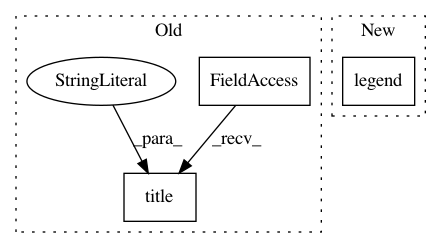

94c47e24613283f98f4d2d7b15f0c50d3c645419,examples/lines_bars_and_markers/bar_stacked.py,,,#,16
Before Change
label="Women")
plt.ylabel("Scores")
plt.title("Scores by group and gender")
plt.xticks(ind, ("G1", "G2", "G3", "G4", "G5"))
plt.yticks(np.arange(0, 81, 10))
plt.legend()
After Change
ax.set_title("Scores by group and gender")
ax.set_xticks(ind, ("G1", "G2", "G3", "G4", "G5"))
ax.set_yticks(np.arange(0, 81, 10))
ax.legend()
plt.show()
In pattern: SUPERPATTERN
Frequency: 3
Non-data size: 3
Instances
Project Name: matplotlib/matplotlib
Commit Name: 94c47e24613283f98f4d2d7b15f0c50d3c645419
Time: 2019-07-22
Author: mbussonnier@ucmerced.edu
File Name: examples/lines_bars_and_markers/bar_stacked.py
Class Name:
Method Name:
Project Name: theislab/scanpy
Commit Name: 9e89e0a6576c8ae04ce97c296fe8fd9dc5ee419f
Time: 2017-02-13
Author: f.alex.wolf@gmx.de
File Name: scanpy/tests/graph.py
Class Name:
Method Name: test_distance_metrics
Project Name: librosa/librosa
Commit Name: 24d6f5e42d775949e191122091826eefa7bf1246
Time: 2020-06-27
Author: bmcfee@users.noreply.github.com
File Name: docs/examples/plot_pcen_stream.py
Class Name:
Method Name: